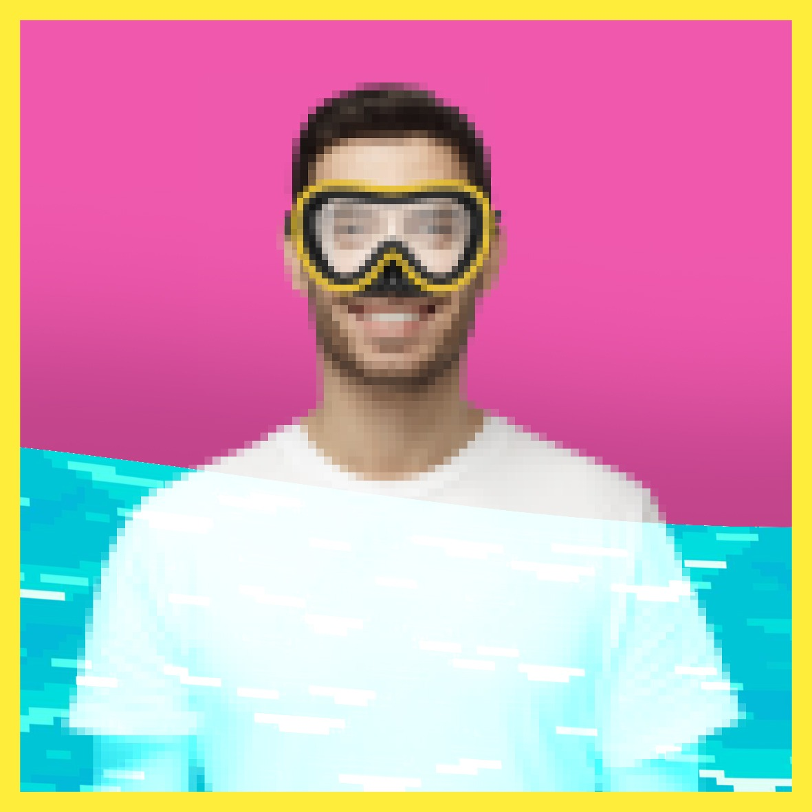

CHE BELLO!
E' nata una splendida amicizia! Due volte a settimana ti immergi nell'
oceano atlantico
per giocare a
tennis
assieme a Kyreee... Purtroppo le partite durano solo dieci secondi! Il fondo dell'oceano non è il luogo ideale, le palline salgono verso la superficie ad ogni lancio e i tuoi rovesci sono piuttosto lenti... Ma ne vale assolutamente la pena per potere stare assieme alla tua nuova
SUPERAMICA
!